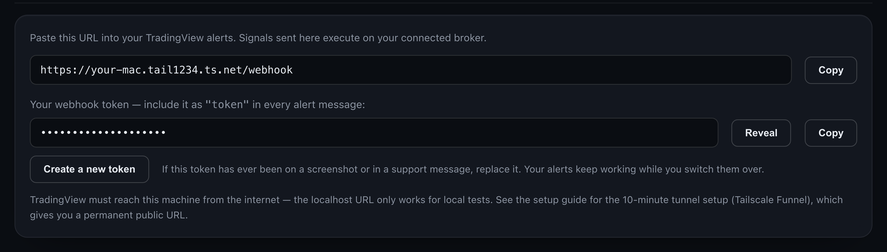
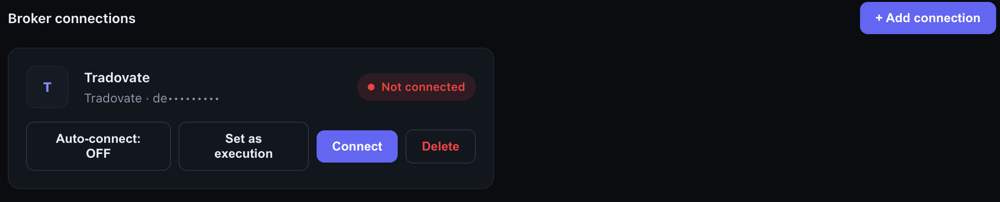
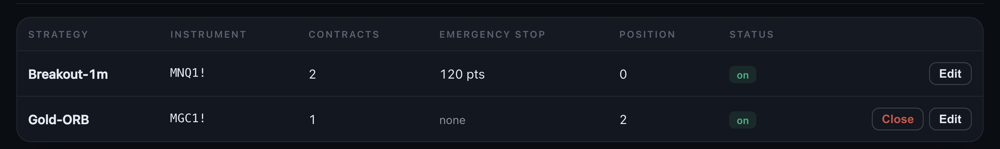
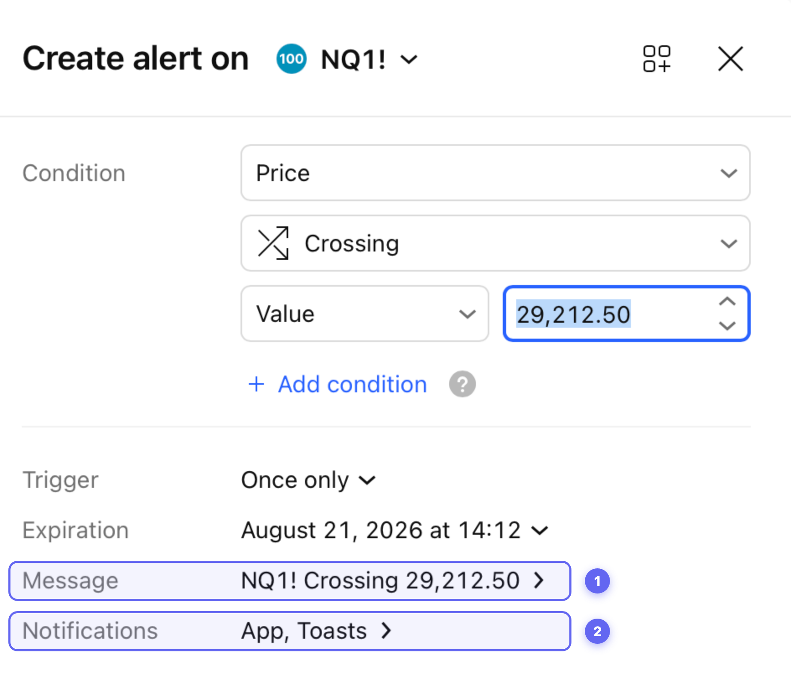
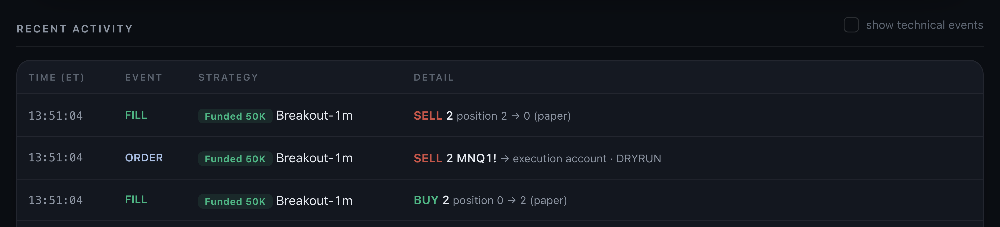
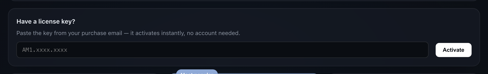

Wire it once. Test it on paper. Then trade.
Five steps, done one time on the machine you trade from. Nothing here risks money: the free tier trades paper only, so you'll see the whole chain fill before a single real order can exist.
Prefer to be walked through by your own AI? Download this guide as plain text and paste it into any assistant — it contains everything on this page, with extra detail.
The chain you're building: TradingView → your machine → your broker.
You'll need
- Your computer
- The Mac app is ready today (M1 or newer); the Windows version is on its way. Use the machine you normally trade from.
- TradingView
- Any plan with webhook alerts — Essential and up.
- A futures prop account
- At a firm that supports Rithmic, with API access enabled. Your firm charges its own API-access fee, paid to the firm directly.
- Tailscale
- A free app, used once in step two — tailscale.com/download.
- Your license key
- Only for going live later. Paper trading needs no key and no card.
Install BridgePit.
Download the Mac app, open the file, drag BridgePit into Applications, and launch it. Your browser opens the dashboard at 127.0.0.1:8787 — an address that means this computer. Your settings, credentials, and controls live there and answer to no one else.
If macOS warns about an unidentified developer the first time: right-click the app, choose Open, then Open again. Once.
Give your machine an address TradingView can find.
Here's the thing this step solves: TradingView lives on the internet, and your computer — on purpose — can't be found from the internet. So we give it one address, for one door, once. A free app called Tailscale does it. Three small moves:
- Install Tailscale and sign in. Download it at tailscale.com/download, open it, and sign in with Google or Apple — the free personal plan is all you need.
- Open Terminal. Press
⌘ space, type Terminal, press return. A plain text window opens — you'll type exactly one line in it, ever. - Paste this line and press return:
tailscale funnel --bg 8787
Available on the internet:
https://your-mac.tail1234.ts.net
→ 127.0.0.1:8787Terminal. The middle line — yours will show your own machine's name — is your new address. Done; you can close the window.
That's the whole trick, and you never have to type it again. From now on the app shows your finished webhook address — your new address with /webhook on the end — ready to copy, under Settings → Your webhook:

Settings → Your webhook. Top box: where alerts go. Bottom box: the token that proves an alert is yours. You'll paste both in step four.
Is a public address safe? Yes, by design: through it, the app answers alerts and nothing else — and only alerts carrying your token. Your dashboard, settings, and broker login answer only on this computer. That's enforced inside the app, not just by the tunnel.
Connect your broker.
Connections → + Add connection. Pick your broker, enter the login your broker or prop firm gave you, then Save & Connect. The status pill turns green; your first connection becomes the execution account automatically.

Connections. Your login is shown masked; the pill goes green once connected.
Credentials are encrypted on your machine with a key that never leaves it, used only to open your broker session. They never touch our servers — we couldn't read them if we wanted to.
Name your strategy. Wire the alert.
On Strategies, add your strategy. The name is the handshake — your alert must send exactly the same one — and the size multiplier is a hard cap on how big this strategy may ever get.

Strategies. One row per strategy; the cap applies before any order leaves.
Then, in TradingView, open the alert window — the ⏰ alarm-clock icon on the right toolbar, then Create alert. You touch exactly two rows:

Your TradingView alert window. ① Message — click it, clear what's there, paste the block below. ② Notifications — click it, switch on Webhook URL, and paste your address from step two.
The block for the Message box — you only ever touch the highlighted values (your strategy name, your token in both spots, your connection name and account); everything else stays exactly as written:
{
"strategy_name": "ORB-5m", ← same name as in the app
"symbol": "{{ticker}}",
"data": "{{strategy.order.action}}",
"quantity": "{{strategy.order.contracts}}",
"price": "{{close}}",
"date": "now",
"order_type": "MKT",
"token": "your-token-from-settings",
"multiple_accounts": [{
"token": "your-token-from-settings",
"connection_name": "TRADOVATE1", ← the name from step three
"account_id": "your-account-id",
"quantity_multiplier": 1
}]
}Already sending PickMyTrade-format alerts? They work unchanged — point them at /v2/add-trade-data on your new address. Migrating is editing one URL per alert.
Fire one alert. Watch it fill on paper.
Trigger your alert once. Then look at the dashboard:

Recent activity. A full round trip on paper — and one duplicate alert caught and refused on the way.
A FILL row wearing your strategy's name means the whole chain works: TradingView reached your machine, your machine simulated the order. Nothing touched a real account — going live requires a green broker connection and an active subscription. Until both are true, everything stays paper by design.
When you're ready, paste the license key from your purchase email under Subscription:

Subscription. The key activates on this machine — no account to create.
Before your first live session: open Settings → Risk controls and set the daily loss stop to your firm's daily limit or tighter. The end-of-day flatten (15:55 ET unless you change it), per-strategy caps, duplicate rejection, and the dashboard kill-switch are already on.
Every failure says its name.
| You see | It means |
|---|---|
| bad token | The token in your alert doesn't match Settings. Re-copy it into both places it appears in the message. |
| unknown strategy | The alert's strategy_name doesn't exactly match a strategy in the app. Case and spaces count. |
| REJECT · burst duplicate | Working as intended — the same signal arrived twice within seconds and the copy was refused. |
| nothing appears at all | TradingView can't reach your machine. Run tailscale funnel status, and check the URL ends in /webhook. |
| fills say (paper) after subscribing | Live needs a green connection and an activated key — check both on the dashboard. |
Stuck anyway? support@bridgepit.com — paste the row from Recent activity if there is one, and you'll get a specific answer.
Write to us directly.
support@bridgepit.com — it lands with the two people who built BridgePit, not a ticket system. We answer fast: we're spread across European and Asian hours, so someone is awake whenever you write.
Account or license problem — key never arrived, billing looks wrong? Same address; include the email you purchased with and we fix it directly.
One habit, from us and every prop firm's rulebook: BridgePit executes, you supervise. Keep the machine on during your hours, glance at the dashboard the way you'd glance at a position, quit only when you're flat. Your alerts, your broker, your IP — and you, still the trader.